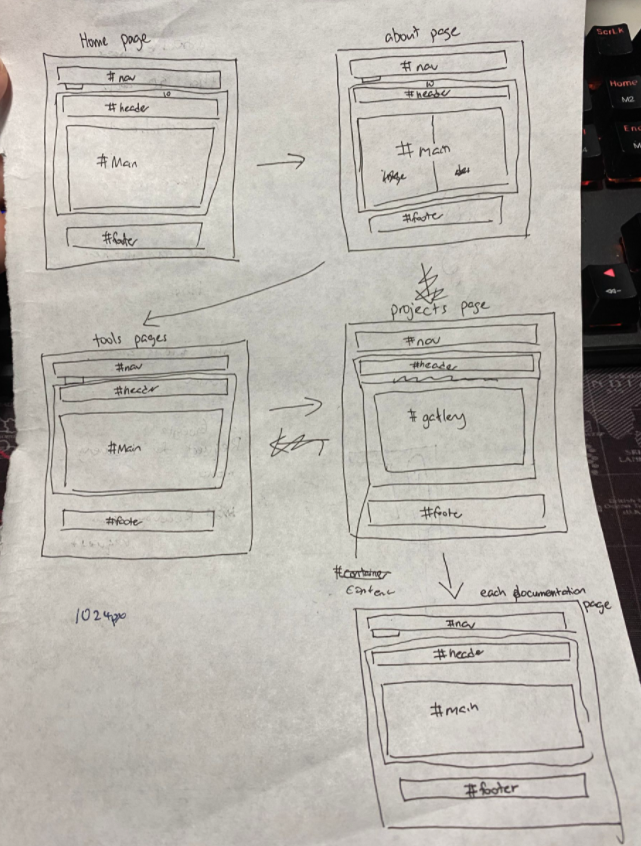

Creating a Website
HTML & CSS
Hyper Text Markup Language (HTML) is a standard markup language for creating web pages. It describes the structure of a Web Page. While Cascading Style Sheets (CSS) is used to style the Web page.
I used references from w3schools, Jake Wright's: Learn CSS in 12 minutes and codecamp on YouTube.
My First basic Website
On the second week of class, we were tasked to make our first website. I felt excited as it was something new to me and also related to my current course as it is what im currently learning as well in my Client Server Application Development CSAD module. It has always been something that i was keen to learn and know more about to hopefully in the future ill be able to create my own personal portfoilo website.
How my first basic Website looked like at first:


How my code was at first:
index.html

about.html

projects.html

My Current website
On the third week, we were tasked to watch Learn CSS in 12 Minutes by Jake Wright. I would say that despite how long ago that this video was published, it is still useful to this day and definitely as a beginner this is a great video to watch as its a great guide in understanding the website layouts and how to code it in CSS.
My Website layout template
While watching Jake Wright's video as reference, i made my own template to look like this:
Jake Wright's Video
My own template layout
- I put dividers to be able to divide the page.
- Then I made a new CSS file and link it to my index.html, from there I started working on the design of the main page in CSS. First got the padding and the widths in the correct pixels that I wanted then it came to choosing the background colors and fonts. I choose a blue and white color for my website as i think it will make the website look calm and cool.
Home page

index.html (Current code)

About page
I used the template I started in the main page and copy over to the about page. The about page is almost the same as the basic about page except i made a big bold sentence on the top saying " I Am a Computer Engineering Student." I plan to add some cool shapes or icons to make that sentence background abit more eye popping but ill leave it like that first.
About page
about.html (Current code)
Tools page
This page will be a page that i would showcase the softwares i used in this elective and some extensions that i used in VS code to help me code more efficiently. Heres the progress so far but im still working on improving it and making changes here and there.
Tools page

tools.html (Current code)

Project page
I made it to when if u click project, it will bring u to a gallery table which will show all my projects that i have done so far but thats still a work in progress.
I decided to do something different to the navigation bar where if you hover over the project tab it will be able to show a dropdown of the list of projects I have done which for now it is only displaying some of the projects.
Project page

Dropdown menu

projects.html (Current code)

CSS code
Home page

About page

Tools page

Project page

Conclusion
And there you go, there is my current website so far, its still a work in progess but sooner or later by the end of this elective. It would be a beautiful website that I would be proud to look back to.